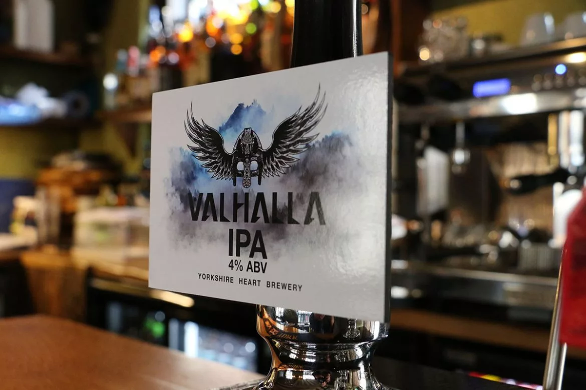
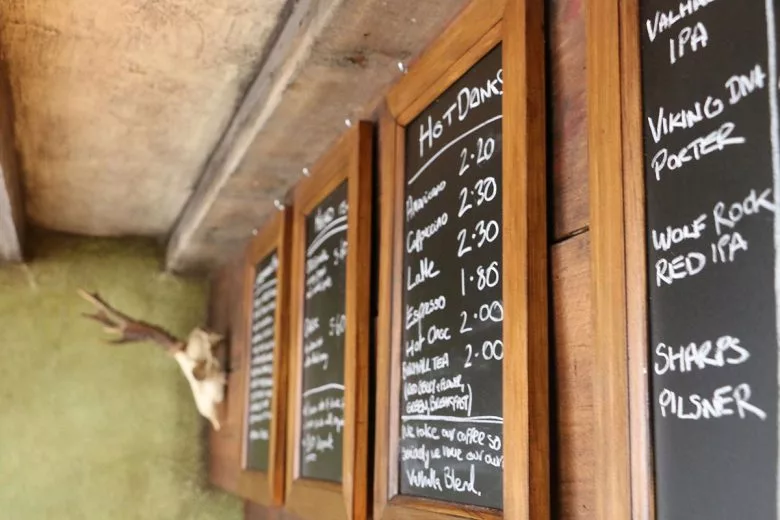

The Valhalla Bar: York´s New Viking Bar
Created by fans of norse culture – Matt Bedingham and Vincent Roberts – their bar offers not just aesthetic pleasure but also a great place to feast.
Drawing on their scandinavian fandom knowledge and some comic book reading shared between the friends, they started playing with the idea of the legend of Thor and asking the question; “If Thor was down here on earth today where would he want to eat and drink?” It’s a fun question that’s lead to months of planning and renovations to transform the this York´s bar site into a modern day viking bar and restaurant.
As for its features, its furniture is made of oak as rugged as Thor himself, and the place is ilumminated by candles (electrical, but you get the spirit!) and there are many touches of detail, art and beauty pertinent to the place: horns of mead to drink, skulls for display, human and not, norse shields, wooden beams and fur cushions.
As for the feasting you may enjoy an ample selection of handpull beer pints, including the house´s own brand. You may also enjoy pork pies, pork rolls, and many other special dishes, including the recommended by the house: Odin´s Platter, but only if you are mighty hungry! You may also enjoy some classics, like Fish and Chips or some good old apple pie.
As for modern pleasures we cannot pass the fact that the bar has their own barista machine for coffee, and their own brand of blended coffee, dubbed as dark, "smooth and sweet" created by the Coffee Emporium and exclusive to the Valhalla Bar.
Here in All Viking we saw this place very well. Coming the winter this is a great spot to bunker down through an evening. The food offering is solid and abundant and the staff attentive. If you’re not into vikings or themed bars in general this might not be the place for you. If you’re looking for something fun, different and have a crush on Ragnar Lothbrok definitely swing by the Vallhala (the bar of course, the alternative would be crazy!).
The place was also home to several groups of roleplaying fans, who loved to spend the evenings rolling dice and drinking beer, with the end of the pandemic at sight, you might want to hook up with friends and enjoy this wonderful roleplaying-games-friendly enviroment over a few rounds of drinks, a few rounds of dire and a hearty belly laughter amid a lots of "Skäl!", just how life should be.